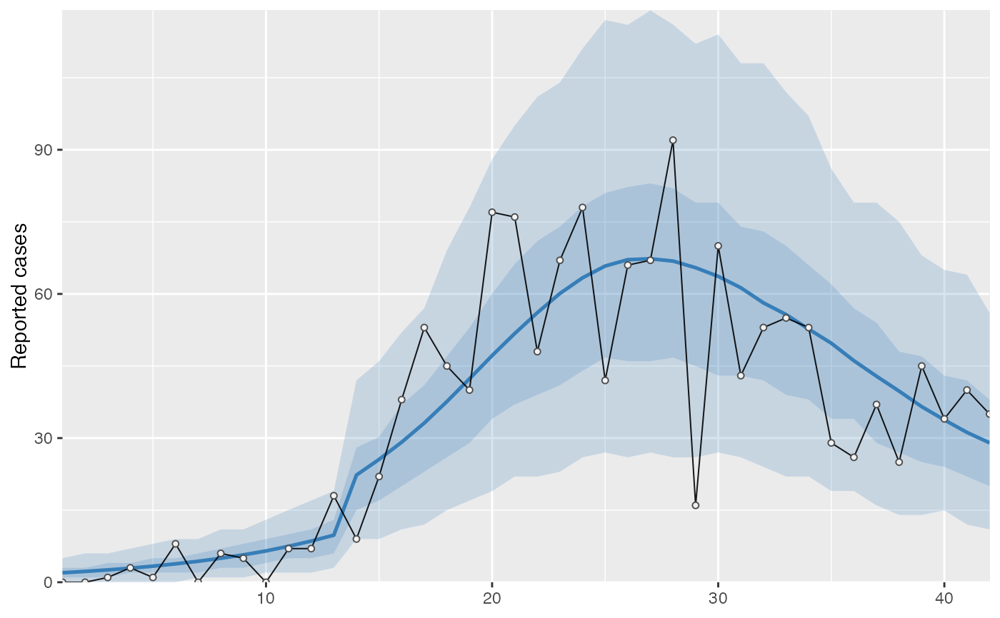
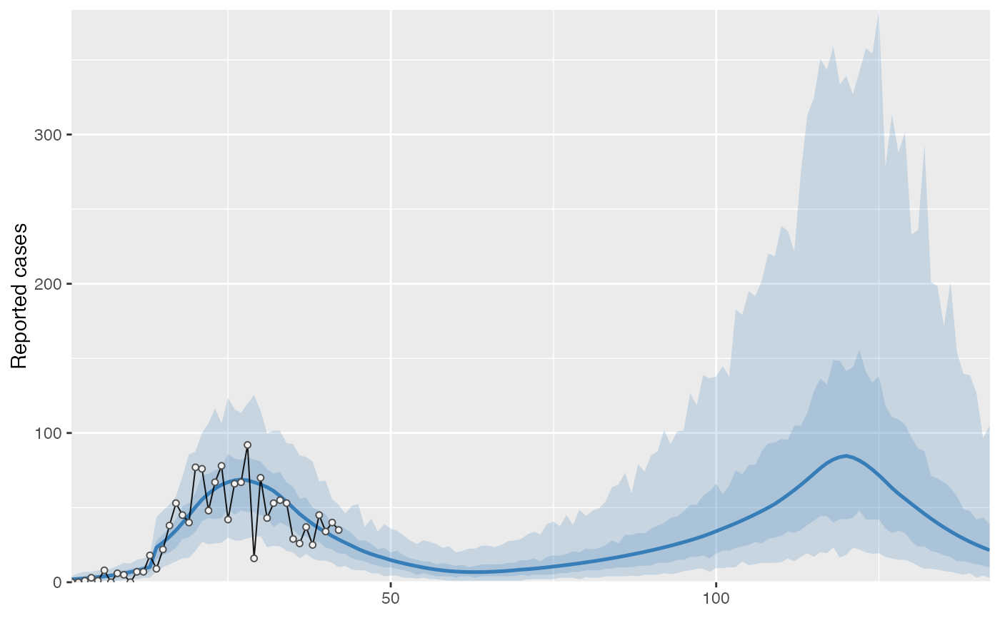
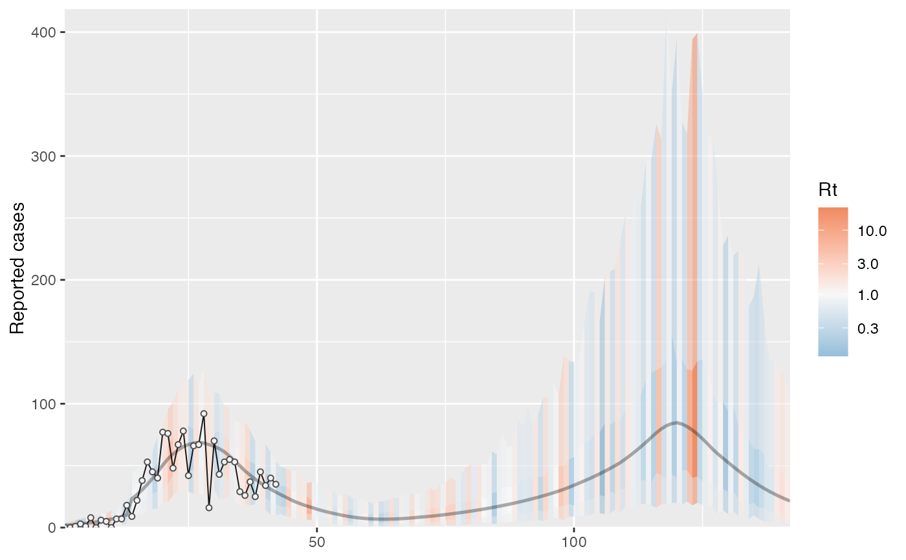

Make a projection with a SEIR fit
project_seir.RdPredict from a fit_seir() object, possibly with a future prediction. By default, the
projection uses the estimated f values (fraction of normal
contacts encountered for those physical distancing). The function also includes
functionality to specify a vector of fixed f values starting on a given
future date.
project_seir( obj, forecast_days = 0, f_fixed_start = NULL, f_fixed = NULL, f_multi = NULL, f_multi_seg = NULL, iter = seq_along(obj$post$R0), return_states = FALSE, imported_cases = 0, imported_window = 1, parallel = TRUE, X = obj$stan_data$X, ... )
Arguments
| obj | Output from |
|---|---|
| forecast_days | Number of projection days. |
| f_fixed_start | Optional day to start changing f. Must be set if
|
| f_fixed | An optional vector of fixed f values for the projection.
Should be length |
| f_multi | Multiplicative vector of f values. Same structure as |
| f_multi_seg | Which |
| iter | MCMC iterations to include. Defaults to all. |
| return_states | Logical for whether to return the ODE states. |
| imported_cases | Number of cases to import starting on first projection day. |
| imported_window | Number of days over which to distribute imported cases. |
| parallel | Use parallel processing via future and furrr? |
| X | An optional model matrix that acts additively on log expected cases. |
| ... | Other arguments to pass to |
Value
A data frame:
- day
Day
- data_type
Data-type column from the case data
- mu
Expected number of cases
- y_rep
Posterior predictive replicate observation
- phi
Posterior draw of phi, the NB2 dispersion parameter, if included
- .iteration
The MCMC iteration
Details
Set a future::plan() and this function will operate in parallel
across MCMC iterations using future and furrr.
Examples
cases <- c( 0, 0, 1, 3, 1, 8, 0, 6, 5, 0, 7, 7, 18, 9, 22, 38, 53, 45, 40, 77, 76, 48, 67, 78, 42, 66, 67, 92, 16, 70, 43, 53, 55, 53, 29, 26, 37, 25, 45, 34, 40, 35 ) # Example fixed sample fractions: s1 <- c(rep(0.1, 13), rep(0.2, length(cases) - 13)) # To use parallel processing with multiple chains: # options(mc.cores = parallel::detectCores() / 2) # Using the MAP estimate for speed in this example: m <- fit_seir( cases, iter = 100, i0_prior = c(log(8), 0.2), samp_frac_fixed = s1, fit_type = "optimizing" )#> Finding the MAP estimate.#> MAP estimate: #> i0 R0 start_decline end_decline f_s[1] #> 7.33 3.13 14.82 21.58 0.22 #> phi[1] e #> 6.48 0.82 #> Mean in constrained space of MVN samples: #> i0 R0 start_decline end_decline f_s[1] #> 7.40 3.14 14.82 21.54 0.23 #> phi[1] e #> 7.23 0.83 #> SD in constrained space of MVN samples: #> i0 R0 start_decline end_decline f_s[1] #> 1.39 0.10 0.60 0.92 0.09 #> phi[1] e #> 2.64 0.05p <- project_seir(m)#> Warning: `future_options()` is deprecated as of furrr 0.2.0. #> Please use `furrr_options()` instead. #> This warning is displayed once every 8 hours. #> Call `lifecycle::last_warnings()` to see where this warning was generated.p#> # A tibble: 4,200 x 7 #> day data_type mu y_rep phi .iteration forecast #> <int> <int> <dbl> <dbl> <dbl> <int> <lgl> #> 1 1 1 1.73 2 10.1 1 FALSE #> 2 2 1 1.99 0 10.1 1 FALSE #> 3 3 1 2.28 3 10.1 1 FALSE #> 4 4 1 2.61 1 10.1 1 FALSE #> 5 5 1 3.00 6 10.1 1 FALSE #> 6 6 1 3.44 4 10.1 1 FALSE #> 7 7 1 3.94 4 10.1 1 FALSE #> 8 8 1 4.52 4 10.1 1 FALSE #> 9 9 1 5.18 4 10.1 1 FALSE #> 10 10 1 5.94 2 10.1 1 FALSE #> # … with 4,190 more rows#> #>#> #> #># for parallel processing (optional) # future::plan(future::multisession) p <- project_seir(m, forecast_days = 100, f_fixed_start = 53, f_fixed = c(rep(0.7, 60), rep(0.2, 30)), iter = 1:25 ) p#> # A tibble: 3,550 x 8 #> day data_type mu y_rep phi .iteration forecast f_fixed #> <int> <int> <dbl> <dbl> <dbl> <int> <lgl> <lgl> #> 1 1 1 1.73 2 10.1 1 FALSE FALSE #> 2 2 1 1.99 1 10.1 1 FALSE FALSE #> 3 3 1 2.28 3 10.1 1 FALSE FALSE #> 4 4 1 2.61 2 10.1 1 FALSE FALSE #> 5 5 1 3.00 3 10.1 1 FALSE FALSE #> 6 6 1 3.44 1 10.1 1 FALSE FALSE #> 7 7 1 3.94 5 10.1 1 FALSE FALSE #> 8 8 1 4.52 2 10.1 1 FALSE FALSE #> 9 9 1 5.18 3 10.1 1 FALSE FALSE #> 10 10 1 5.94 6 10.1 1 FALSE FALSE #> # … with 3,540 more rows# Get threshold for increase: # future::plan(future::multisession) # for parallel processing (optional) # (only using 40 iterations for a fast example) thresh <- get_threshold(m, iter = 1:40, show_plot = TRUE)#> Projecting 0.3 #> Projecting 0.47 #> Projecting 0.63 #> Projecting 0.8#> [1] 0.5571626# Get doubling time (prevalence is declining in this example) get_doubling_time(m, iter = 1:40, show_plot = TRUE)#> [1] -12.206996 -9.120015 -12.842758 -9.945963 -7.811543 -6.515639 #> [7] -7.816685 -5.760329 -13.761678 -10.993012 -7.416578 -9.105512 #> [13] -17.026427 -12.731450 -8.465330 -6.481328 -6.337543 -7.559904 #> [19] -8.182519 -7.880885 -6.774119 -8.785315 -9.527219 -8.329275 #> [25] -10.806046 -8.668513 -7.900398 -35.571056 -6.880035 -9.164080 #> [31] -6.748669 -9.830272 -7.800595 -8.795443 -8.114695 -14.976421 #> [37] -13.397818 -6.696756 -15.460064 -8.028927#> # A tibble: 28,900 x 15 #> .iteration time S E1 E2 I Q R Sd E1d E2d #> <int> <dbl> <dbl> <dbl> <dbl> <dbl> <dbl> <dbl> <dbl> <dbl> <dbl> #> 1 1 -30 1.58e6 0.723 0.181 0.904 4.52e-8 1.81e-7 3.52e6 1.61 0.403 #> 2 1 -29.8 1.58e6 0.828 0.175 0.893 1.10e-2 4.52e-2 3.52e6 1.85 0.391 #> 3 1 -29.5 1.58e6 0.926 0.175 0.881 2.12e-2 9.03e-2 3.52e6 2.06 0.391 #> 4 1 -29.2 1.58e6 1.02 0.180 0.870 3.09e-2 1.35e-1 3.52e6 2.27 0.401 #> 5 1 -29 1.58e6 1.10 0.187 0.862 3.99e-2 1.81e-1 3.52e6 2.46 0.417 #> 6 1 -28.8 1.58e6 1.19 0.196 0.856 4.85e-2 2.26e-1 3.52e6 2.65 0.438 #> 7 1 -28.5 1.58e6 1.27 0.207 0.853 5.65e-2 2.71e-1 3.52e6 2.82 0.462 #> 8 1 -28.2 1.58e6 1.34 0.219 0.853 6.42e-2 3.17e-1 3.52e6 3.00 0.489 #> 9 1 -28 1.58e6 1.42 0.232 0.856 7.14e-2 3.63e-1 3.52e6 3.16 0.517 #> 10 1 -27.8 1.58e6 1.49 0.245 0.862 7.84e-2 4.10e-1 3.52e6 3.33 0.546 #> # … with 28,890 more rows, and 4 more variables: Id <dbl>, Qd <dbl>, Rd <dbl>, #> # Rt <dbl>#> Warning: Removed 12000 row(s) containing missing values (geom_path).